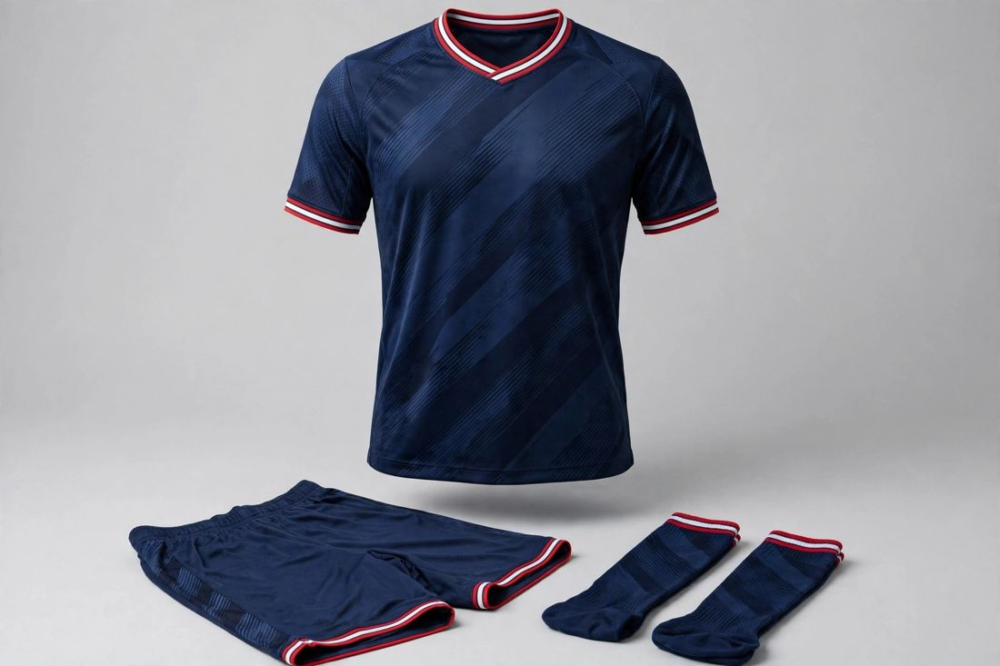

Ordering custom teamwear should be the easy part of running a sports club — yet it is where most kit problems begin. A missing size, a sponsor logo sent too late, a crest in the wrong file format: small oversights at the start become expensive corrections later. As a custom teamwear manufacturer in Sialkot, Pakistan, we supply clubs across football, cricket, rugby, basketball and more, and the smoothest orders all follow the same sequence. This guide walks through it, so your club's kits arrive right, complete and on time for the season.

Before you contact any manufacturer, write down the full list. How many players and staff need kits? Do you need a home kit only, or home and away? Training shirts, warm-up jackets, tracksuits, shorts and socks are often ordered alongside the match kit — and ordering them together is cheaper and simpler than placing a second order later. Note the age groups too: a senior squad and a youth academy in one order need separate size runs. A one-page list of items and quantities, agreed by the committee before you enquire, prevents the most common delay of all: the order changing halfway through production.
Sizing causes more kit complaints than any other issue, and it is almost always avoidable. Collect each player's size rather than guessing from last season's order — squads change, and young players grow. If your manufacturer offers a size chart, measure one existing shirt against it instead of relying on "medium" alone, because sizing varies between makers. Build in a small buffer: two or three extra pieces in the most common sizes cover a late signing or a torn shirt mid-season without a costly re-order. And confirm the fit you want — a slim match fit and a relaxed training fit are different cuts, and they should be stated, not assumed.
You do not need a finished tech file to start. A clear design — even a sketch, a photo of a kit you like, or a reference sample — is enough for a manufacturer to work from. What matters most is the artwork: send your club crest and sponsor logos in the highest resolution you have, ideally as vector files, because a small, blurry logo cannot be printed sharply at chest size. Tell the manufacturer where each element goes — crest on the left chest, sponsor across the front, league badge on the sleeve — and which colours are fixed (your club colours) versus flexible. If you share your own design, we manufacture it exactly for your club; the kit is yours, not a catalogue copy. Full guidance on construction choices is in our companion guide on sublimation vs cut-and-sew football kits.
Teamwear fabrics are chosen for the sport, not for looks alone. Lightweight, breathable, moisture-wicking fabrics suit football and basketball; heavier, more durable blends suit rugby and training wear that gets washed several times a week. Construction matters too: sublimation printing puts the whole design — gradients, patterns, sponsor panels — into the fabric itself, so it never cracks or peels, while cut-and-sew construction with embroidered or appliquéd details gives a more traditional, premium feel. Neither is universally better; the right choice depends on your design, your budget and how hard the kit will be used. Ask your manufacturer to explain the trade-offs for your specific design before you commit.
Personalisation is where orders most often go wrong, because it arrives in pieces. Send the complete names-and-numbers list in one document — player name, shirt number, size — and double-check spellings against the squad list, not from memory. Confirm the font, colour and position of names and numbers, and whether the sponsor print sits on the chest, back or sleeve. If a sponsor joins late, say so early: adding a sponsor panel to a finished design is simple before printing, but re-printing finished shirts is not. One final read-through of the list by the team manager before production starts catches nearly every error.
Never approve a bulk order you have not seen. Once your design is received, we develop a sample in 7–10 working days and share photos for your approval. Check it the way a player will: try it on, stretch it, wash it once, look at the print up close and the stitching at the seams. This is the cheap moment to correct anything — a colour that looks different in print, a crest slightly too small, a collar that sits wrong. Small corrections at sample stage cost almost nothing; the same correction after bulk production costs the whole order. Only approve the sample in writing when you are genuinely happy with it.
Clubs are not brands with warehouses, so minimums matter. Our trial MOQ for teamwear is 15–50 pieces per style, which covers a full squad plus staff and a few spares without forcing the club to over-order. You can usually mix sizes within that quantity, so a squad of mixed builds is no problem. If your club needs more — a second team, an academy, a supporters' version — the same design scales up without a new setup. What a low MOQ really buys a club is control: order what this season needs, and reorder the same design next season.
Good production has two checkpoints: in-line checks while the order is being made, and a final inspection before packing — measurements, stitching, printing, names and numbers, and the full count against your list. Ask for final quality-check photos before dispatch, and check the delivery against your names-and-numbers list the day it arrives, while any correction is still easy. For small orders, one piece from the production run can be sent to you for checking while the rest continues, and any change you ask for is applied to the remaining pieces. Agree the delivery date in writing, and plan for the order to arrive at least two weeks before the first match — kit delays always hurt more in the week a season starts.
Work backwards from your first fixture. Sampling takes 7–10 working days after your design and artwork are received. Bulk production time then depends on the order size and complexity, and shipping to North America or Europe adds its own window by air or sea. As a rule of thumb, start the process at least six to eight weeks before you need the kits in hand — earlier if sponsor artwork is still being finalised. A club that starts sampling today can be kitted out well within one pre-season; a club that starts two weeks before kick-off is relying on luck.
Every one of these is avoidable with a checklist and a few weeks of lead time — which is exactly what this guide is for.
You do not need a finished tech pack to begin — one design, your crest and sponsor artwork, and a size list are enough. Send them on WhatsApp at +92-339-5099397 or by email at contact.safettech@gmail.com, and we will reply with an exact quote for your kit and a sampling plan. Or use our contact page to start your order — trial orders from just 15–50 pieces per style, made exactly to your club's design. See the full range on our sports teamwear page.

I have worked with clubs that order once a season and clubs that reorder every month, and the smoothest orders always start the same way — a clear design, an honest deadline, and a size list checked twice. If your season is coming up, send me your kit idea early; I will personally make sure your club gets kits it is proud to wear.
Ahmed Zahid
Founder & Director, Safe-T TECH International · Sialkot, Pakistan
Send your design today — samples in 7–10 days, trial orders from just 15–50 pieces per style.